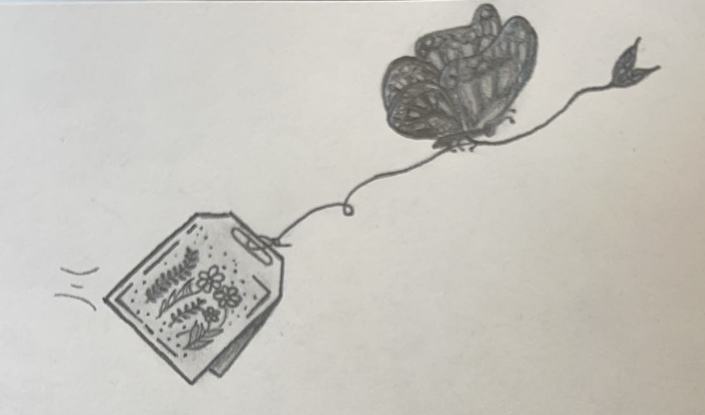

My Hobbies!


I enjoy travelling, the photos here are from my trips to Banff, Jasper, and Vancouver! Highly recommending visiting. We went during the end of Winter to beginning of Spring and it was the best!

Fun fact, I've been the master of ceremonies for several events and festivals throughout Ontario for over 4 years now!
I like to engage with the community. Since 2018, I have beeing the Master of Ceremonies and Backstage manager for events across Ontario! The fast-paced environment and problem solving makes the experience incredibly rewarding.
I have also interacted with an array of politicians during this time from mayors, senators, election candidates, and those running for prime minister.
I have also interacted with an array of politicians during this time from mayors, senators, election candidates, and those running for prime minister.
